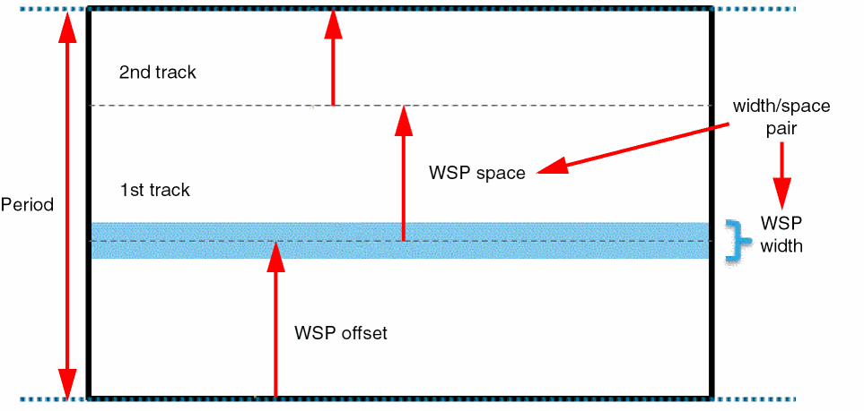
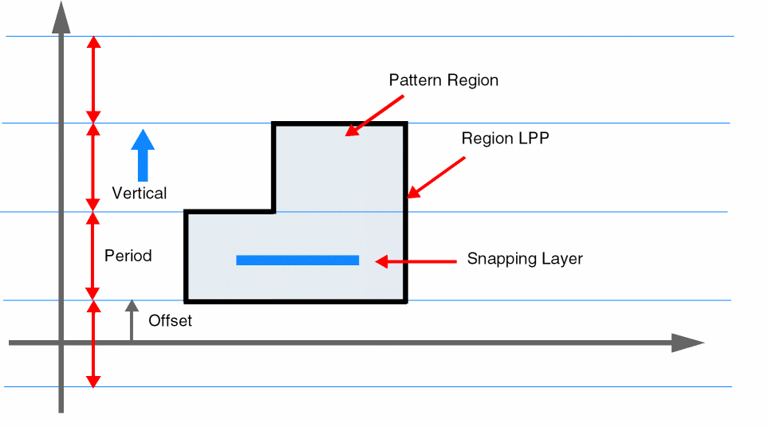
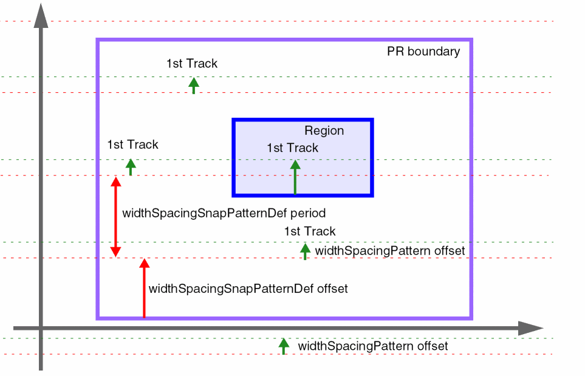

1
Width Spacing Patterns
Width Spacing Patterns (WSPs) are used in advanced node designs to create tracks with specific widths and spacing for correct-by-construction track-based routing. Virtuoso® Layout Suite L now supports Width Spacing Patterns (WSP) to create tracks in the layout. WSPs are an advanced form of snap pattern definitions (SPDef) that define the tracks on which shapes can be placed.
WSPs are defined in the technology database and the design using the following layer rules:
-
widthSpacingPattern(WSP) defines tracks as width and spacing pairs. Each width spacing pattern can span one or more periods. The first track of a pattern is anchored to the global period grid using an offset, as shown in the following figure. Width spacing patterns are not associated with a specific metal layer or direction.
 -
widthSpacingPatternGroupsare collections of width spacing patterns. -
widthSpacingSnapPatternDefs(WSSPDef) define the following:- The layer-purpose pair for the WSSPDef.
- The period (the spacing between coarse-grain period tracks).
- The direction in which the period spacing is applied.
- The offset (distance of the nearest period track to the anchor reference).
- The snapping layers to which the WSSPDef applies.
-
The allowed
widthSpacingPatternsandwidthSpacingPatternGroupsfor the WSSPDef. - The default active pattern (WSP).
WSSPDefs can apply to a global grid and/or to a pattern region.
The following figure illustrates the WSSPDef attributes. In this case, the track pattern spacing is vertical, so the tracks are horizontal. There is no SnapBoundary or PR boundary, so periods are offset from the origin axis. A pattern region layer-purpose pair and a snapping layer are defined. The polygon on the specified layer-purpose pair specifies the region to which the WSSPDef applies.
In the following figure, the red dotted lines indicate the global period grid in each stripe of the period grid. This grid is anchored to the PR boundary through the offset for the WSSPDef.
The green dotted lines indicate the first track in each period. The global default active pattern is applied outside pattern regions, and its offset specifies the distance from the period grid line to the first wiring track.
Finally, a region shape is used to apply a non-default active pattern within an area of the cellview. The active pattern specified on the region overrides the global default active pattern and its offset specifies the location of the first track.
 -
relatedSnapPatternsare predefined groupings of SPDefs and WSSPDefs.relatedSnapPatternscreate groups of regions in the layout.
Related Topics
Width Spacing Pattern Support in Virtuoso Tools
Return to top